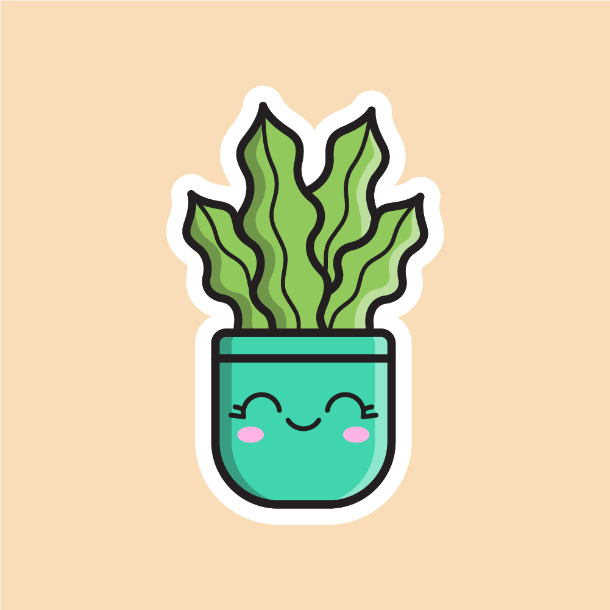
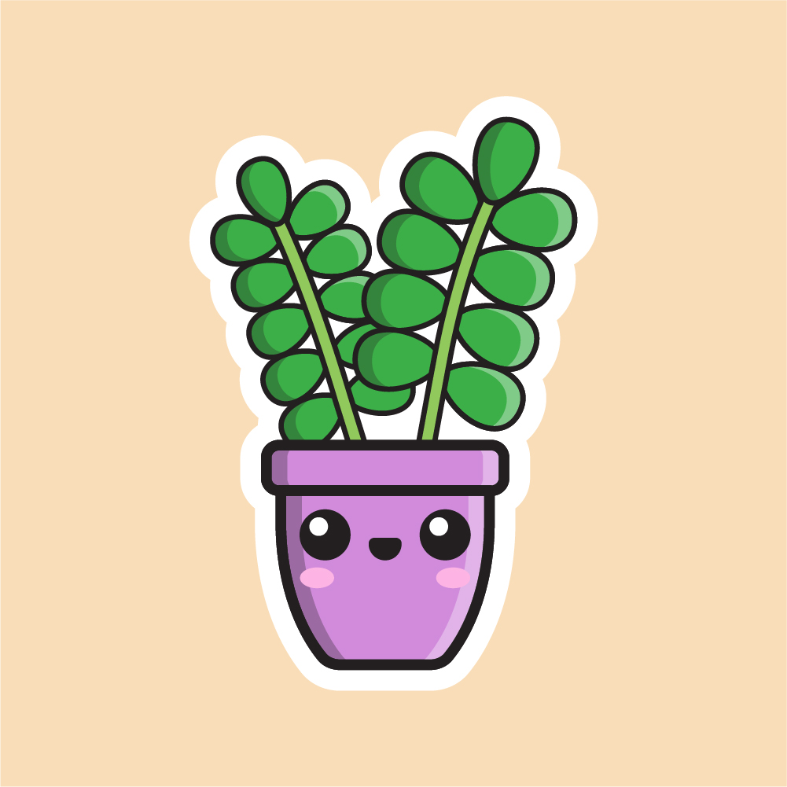
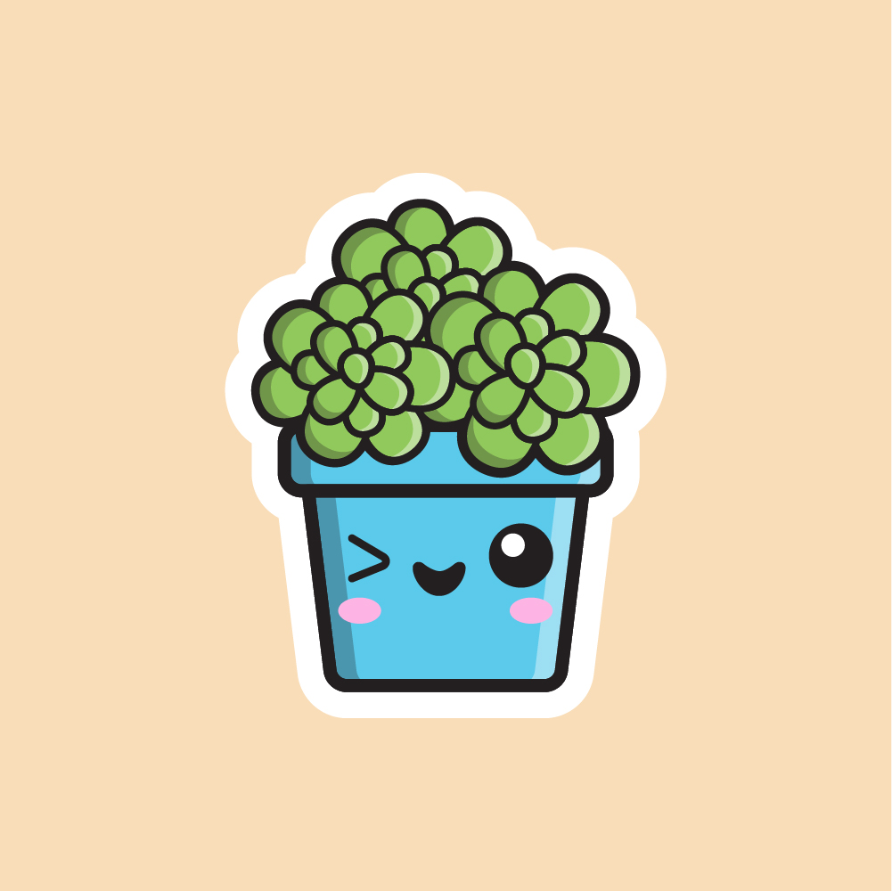

Design & Creation

Lucky Shrub specializes in crafting stunning outdoor spaces tailored to your vision and lifestyle. Led by our skilled garden architect, we blend aesthetics with functionality to create lush retreats or modern landscapes. From plant selection to sustainable design practices, every detail is meticulously curated. Our comprehensive services include installation by our dedicated team, ensuring your garden is installed with precision and care. With Lucky Shrub, transform your outdoor space into a haven of natural beauty to enjoy for years to come.
Maintenance

At Lucky Shrub, we're not just about creating stunning gardens – we're committed to their ongoing care and maintenance too. Our dedicated team handles everything from pruning to pest control, ensuring your outdoor oasis remains healthy and vibrant year-round. With personalized services tailored to your garden's unique needs, you can trust us to keep your space looking its best while you sit back and enjoy the beauty of nature.
Landscaping

At Lucky Shrub, we specialize in turning outdoor spaces into breathtaking masterpieces. Our skilled team works closely with clients to create functional and environmentally friendly landscapes that reflect their style and personality. From lush greenery to elegant water features, every detail is carefully considered. Plus, our ongoing maintenance services ensure your landscape stays beautiful year-round. With Lucky Shrub, your outdoor oasis is in expert hands.